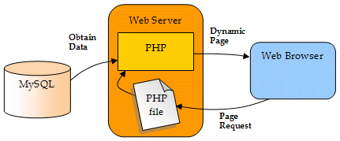

PHP
PHP is a programming language released in 1995 (and the latest update was released September 1. 2017) and, at the time, stood for "Personal Home Page".
It later changed name to the recursive acronym "PHP: Hypertext Preprocessor".
This programming language is primarely used as a server-side scripting language. But with all the updates over time, this has also become a functioning stand alone programming language.
One of the most important features of PHP is its ability to have direct contact with the server through web-servers.
When you log in to a website, PHP is able to relay the information to the databases on the server to check if your information is valid or not.
PHP can also be used to create dynamic web pages, as it can generate HTML code server-side before sending to the client.
I found most of this information here
Here is a picture that depicts the server to client commonucation:

(Source: http://www.databasejournal.com/img/phpmysql-ch4-fig1.gif)